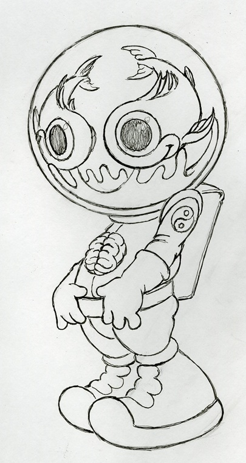
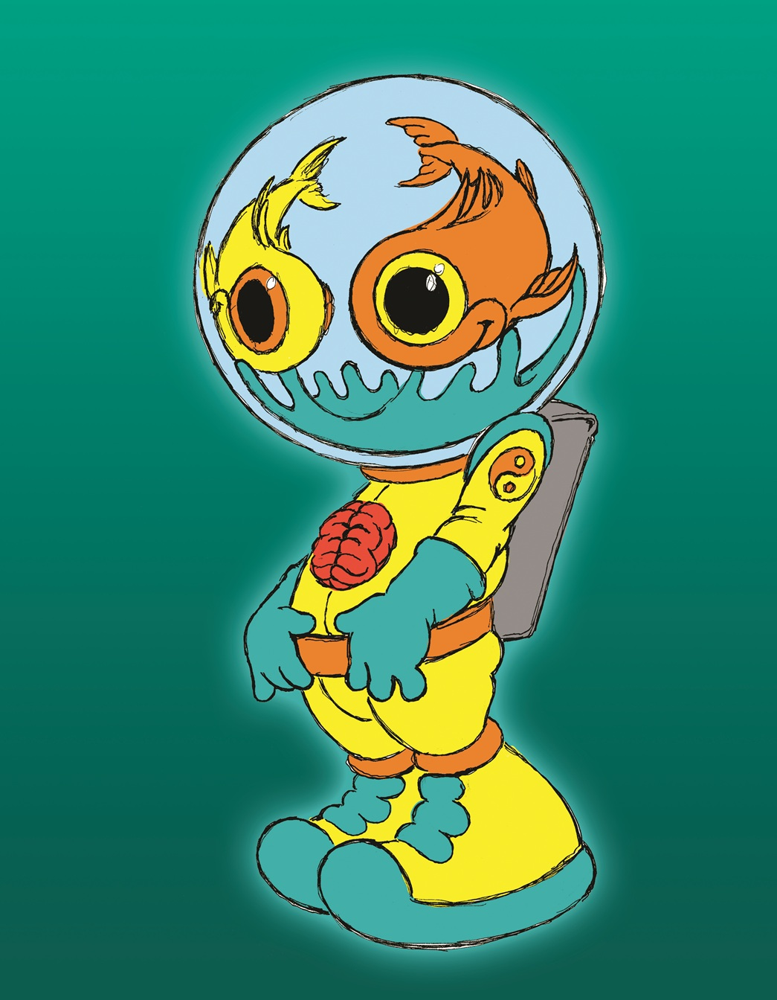

Catalogue home
Sketches & Drawings
← Alien Characters
Search Catalogue
Fishbowl Astronaut
Original Drawing

Title:
Fishbowl Astronaut
Medium:
Ink on paper
Dimensions:
Unknown
Work ID:
RE-017218
Digitized Version

Notes
Sketch for the painting
Fish-Eyed Astronaut
.
← Previous: Fish Bulb Alien
Next: Fishbowl UFO →